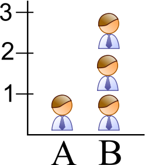

12.3 Critique statistique

Les statistiques ont mauvaise presse auprès de certaines personnes qui pensent qu’on peut leurs faire dire tout et son contraire. Cela a même donné lieu à des ouvrages comme “Attention, statistiques ! Comment en déjouer les pièges” par Joseph Klatzmann ou “How to lie with statistics” par Darrell Huff. Derrière des titres provocateurs, ces ouvrages présentent, en fait, de manière sérieuse les pièges principaux et les moyens de les déjouer. Car, en réalité, ce n’est pas l’usage des statistiques qui est en cause ici, mais son mauvais usage. Voir aussi “Statistical reasoning for everyday life”, par Bennett, Briggs & Triola.

Dans la littérature scientifique et tout autour de nous, nous pouvons trouver des exemples de mauvais usages des statistiques (application erronée de méthodes statistiques). Quelque fois, il s’agit de triche manifeste, mais la plupart du temps c’est par ignorance. Développer un esprit critique statistique est important pour pouvoir démasquer ces diverses situations et ne pas tomber soi-même dans les pièges les plus grossiers.
Voici quelques conseils qui vous aideront à développer votre esprit critique statistique.
- La formulation statistique est-elle en adéquation avec la question biologique posée ?
- Y-a-t-il des biais dans les techniques d’échantillonnage et/ou de mesure ?
- Les graphiques sont-ils adéquats par rapport à ce qui doit être montré ?
- Les axes sont-ils placés correctement, et sont-ils bien libellés ?
- Le graphique respecte-t-il les conventions ?
- Les unités sont-elles correctes ?
- Les calculs sont-ils corrects ?
- Les variables sont-elles du type correct pour l’analyse (qualitative ordonnée ou non, ou alors, quantitative discrète ou continue) ?
- Les conditions d’application des tests statistiques sont-elles respectées ?
- La taille de l’échantillon est-elle suffisante ?
- N’y a-t-il pas pseudo-réplication (plusieurs mesures issues d’un même individu considérées comme des observations indépendantes) ?
- Les grandeurs observées sont-elles plausibles ? Vous pouvez vous rapporter à des éléments connus et comparer. Par exemple, si l’on vous dit qu’une souris adulte pèse 1g, est-ce plausible ou non ? Faite une recherche sur le Web, ou un raisonnement du genre : une souris est constituée principalement d’eau. Un gramme d’eau occupe un volume de 1 cm3. Le volume de la souris adulte est-il supérieur, égal ou inférieur à un cube de 1 cm de côté ?
- Les mêmes données ne peuvent être utilisées deux fois. Si elles sont utilisés pour découvrir un effet, et en même temps pour le vérifier, c’est incorrect.
- Une corrélation ou un effet fortuit n’est-il retiré d’une grande quantité de tests non significatifs ? Soyez attentifs aux tests multiples réalisés sans ajustement du seuil \(\alpha\).
- Les conclusions sont-elles en adéquation avec ce qui est observé dans les données ? Les conclusions répondent-elles à la ou les questions posées initialement ?

Pour terminer ce module, nous vous proposons quelques situations (soit des problèmes, soit des graphiques) qui ont toutes en commun d’être erronées. A vous de trouver ce qui ne va pas. Pour ne pas fausser la donne, les réponses ne sont pas fournies dans ce documents, mais seront discutées en classes tous ensembles.
Profitez-en pour réaliser votre première présentation R Markdown. Choisissez une situation et un type de présentation R Markdown (ioslides, Slidy, Beamer, R Presentation, …). Ensuite réalisez deux ou trois “slides” de présentation. Dans la première, vous exposez la situation. Dans les suivantes, vous expliquer ce qui est incorrect et vous proposez une bonne façon de faire à la place.
Graphe en rubans
Que pensez-vous du graphique suivant ?

Longévité
Un chercheur compile les statistiques de longévité de diverses professions. Pour ce faire, il encode les données des certificats de décès (nom, âge au moment du décès et profession). Il calcule ensuite l’âge moyen de décès par profession. Il constate que la valeur minimale est observée chez les étudiants, avec une valeur moyenne de seulement 20,7 ans (Wainer, Palmer & Bradlow, A selection of selection anomalies, Chance, vol. 11, n°2).
La « profession » d’étudiant est-elle réellement plus dangereuse que celle de policier, chauffeur de taxi, ou cascadeur ? Expliquez…
Corrélations
Vous en pensez quoi ?
Prison
Qu’est-ce qui ne va pas dans la figure suivante ?
Etendue des axes


Comparez de manière critique les deux graphiques précédents. Aidez-vous des schémas ci-dessous pour étayer votre explication.


Travaux d’artistes ?
Que pensez-vous des trois figures suivantes ?


Chauve-souris
Un biologiste étudie une chauve-souris insectivore naine. Il trouve dans la littérature que la biomasse totale de cette chauve-souris varie de 0,23 à 1,95 kg/ha dans les forêts recensées. Afin de calculer l’abondance de ces populations de chauve-souris, il détermine le poids moyen d’un individu comme étant (moyenne ± écart type) 55 ± 13 mg (n = 45). Il utilise ces données pour comparer les populations de chauve-souris aux autre animaux présents dans cette forêt. Il en conclu que la population de chauve-souris dans ces forêts est très nettement supérieure à celle des oiseaux et équivalente à celle des insectes. Ce résultat est inattendu et permet de considérer cette chauve-souris comme espèce clé dans la chaîne trophique, alors que son effet a toujours été négligé auparavant, tant elle est discrète et passe inaperçu la plupart du temps.
Vous travaillez aussi sur les chaînes trophiques de ces mêmes forêts. Comment réagissez-vous à la lecture de ce rapport ? Que faites-vous ensuite ?
Patinage
Que se passe-t-il si tout le mode respecte cette consigne (considérant qu’il est impossible que tous les patineurs aient exactement la même vitesse) ?
Pseudo-perspective
Que pensez-vous de ces graphiques ?

Aidez-vous du schéma suivant pour expliquer ce qui ne va pas…

Homme moyen
Le magazine “Men’s Health” a publié des statistiques qui décrivent l’“homme moyen”. Celui-ci a 34,4 ans, pèse 79,4kg, mesure 177,8cm, dors 6,9 heures chaque nuit, bois 3,3 tasses de café par jour et consomme 1,2 boisson alcoolique quotidiennement.
Sachant que toutes les distributions sont unimodales, donc que les valeurs moyennes correspondent toutes à des observations effectivement mesurées en grand nombres (identiques ou très proches) sur des hommes réels, ce portrait robot de l’“homme moyen” décrit-il effectivement un grand nombre d’individus réellement existants ? Justifiez. Qu’en serait-il de l’“homme médian” ?
Public ou privé ?
Observez bien le grahique ci-dessus… Ensuite, regardez celui ci-dessous qui est réalisé à l’aide des mêmes données. Commentez…

Camemberts, tartes et cie
Que pensez-vous de ces graphiques ?


Espérance de vie
L’espérance de vie est une donnée statistique qui permet de connaître la durée de vie moyenne qu’on peut espérer atteindre à un moment donné pour une nation donnée. Cette statistique est calculée et publiée par de nombreux organismes, incluant l’OMS. Les statistiques indiquent que l’espérance de vie des hommes dans nos pays est de 75,5 ans, et des femmes de 83,5 ans.
Calculez le temps que vous pouvez espérer encore vivre en fonction de votre âge. Que pensez-vous de ce calcul ?
Femmes au travail
Considérez les deux graphiques suivants qui sont sensés représenter la même information (les mêmes données sont utilisées). Comparez-les de manière critique.
Moules
Un scientifique mesure la stabilité de la membrane lysosomale (indice de stress des cellules utilisé en écotoxicologie : on sait que les polluants étudiés tendent à déstabiliser la membrane des lysosomes) chez la moule Mytilus edulis en Mer du Nord. Deux régions sont comparées : la pleine mer (A), et l’embouchure de l’Escault dans sa partie considérée comme la plus polluée (B). Cinq moules sont prélevées aléatoirement sur les deux sites, et dix mesures sont réalisées sur chaque individu. Le scientifique conclu à une stabilité lysosomale significative plus faible au seuil alpha de 5% dans le site B (test de Student non apparié et unilatéral à gauche, t = -6,5, ddl = 49, valeur P < 0.001).
Que pensez-vous de cette étude ?
République bananière ?
Que pensez-vous du graphique suivant ?

Euro manquant
Trois clients dans un restaurant payent leur repas : 30€ (10€ par personne). Le serveur se rend compte qu’en fait leur repas n’a coûté que 25€ en tout. Comme il ne pourra diviser les 5€ à rendre en trois facilement, il décide de garder 2€ dans sa poche et rend 1€ à chaque client. Donc, chaque client a payé 10 – 1 = 9€, soit un total de 27€. Avec les 2€ que le serveur a gardé dans sa poche, cela fait 29€. Alors, où est passé l’euro manquant par rapport aux 30€ payés initialement ?
Réfléchissez et dénoncer l’erreur de raisonnement dans le récit précédent.
Stylos et vers verts ?
Que pensez-vous de ces graphiques ? Vous pouvez vous aidez des schémas suivants pour étayer votre réponse.

Insecticides
Un chercheur dans une industrie chimique s’intéresse à l’effet d’un nouvel insecticide à effet progressif. Il teste son produit sur des drosophiles et observe une mortalité de 10% par jour, et ce, quel que soit le moment où il effectue les mesures après avoir mis les mouches en contact avec l’insecticide. Il en conclu qu’il faut 10 jours pour tuer toutes les mouches. Ce résultat est meilleur que le produit du concurrent, car ce dernier tue 80% des mouches sur la même durée de 10 jours.
Que pensez-vous de la façon dont cette expérience a été menée et de ses conclusion ?
Virus zika

Ca ne s’invente pas !
Lotto
Par le plus grand des hasards, le numéro 8 est sorti 6 fois en 7 tirages successifs du lotto. Sachant qu’une vérification de ce que ce numéro n’a pas plus de chances que les autres d’être tiré au sort, vous ne manquerez pas de constater en bon statisticien(ne) que le numéro 8 est très nettement sur-représenté dans les tirages.
La prochaine fois que vous remplirez votre grille de lotto, jouerez-vous le numéro 8 ? Pourquoi ?
Vous est-il arrivé de jouer la suite 1, 2, 3, 4, 5, 6, 7, 8 au lotto (ou rempliriez-vous une grille avec ces nombres si vous deviez y jouer) ? Pourquoi ?